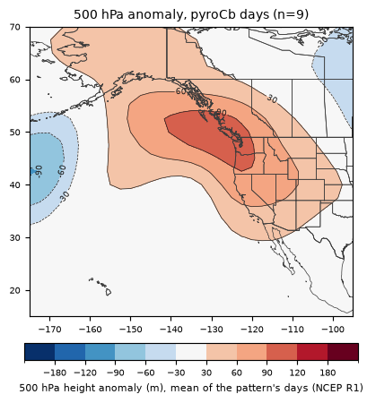
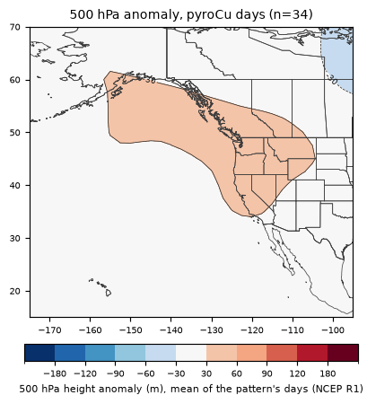
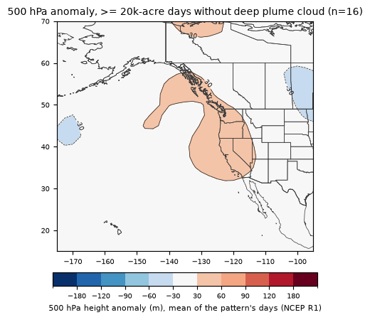
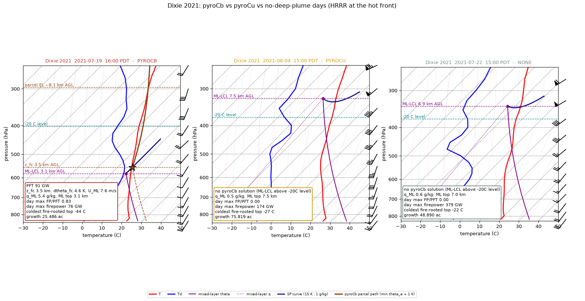
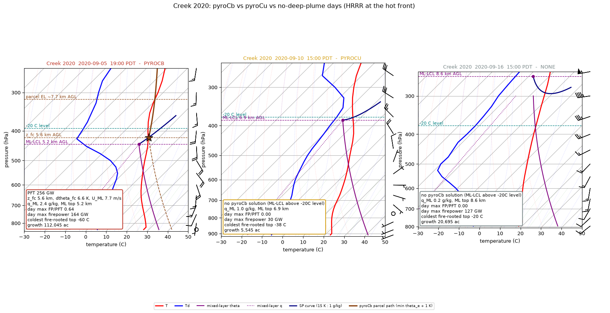
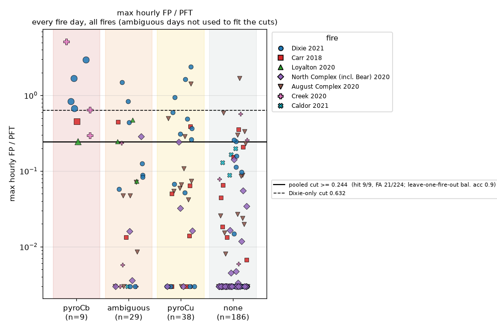
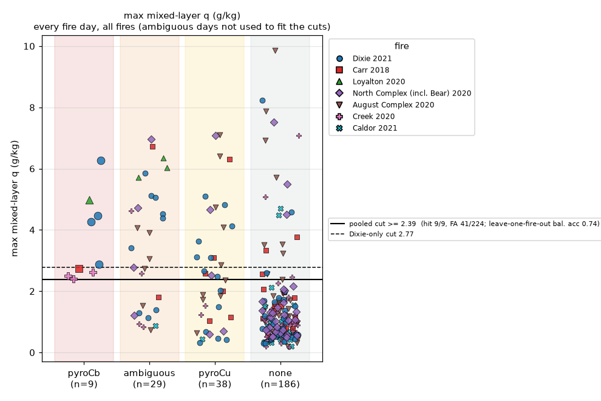
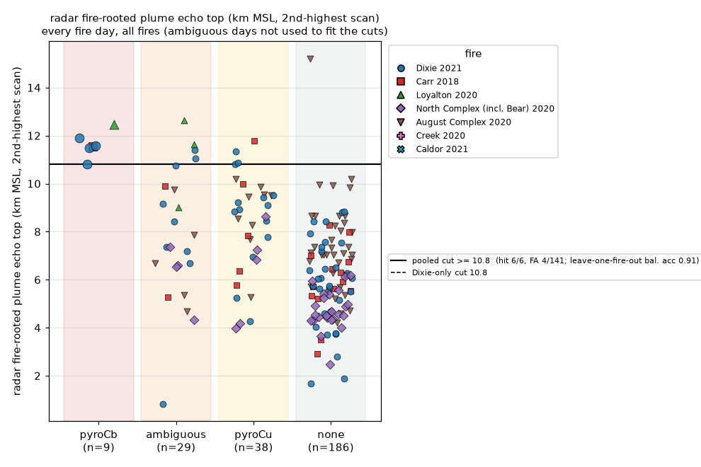
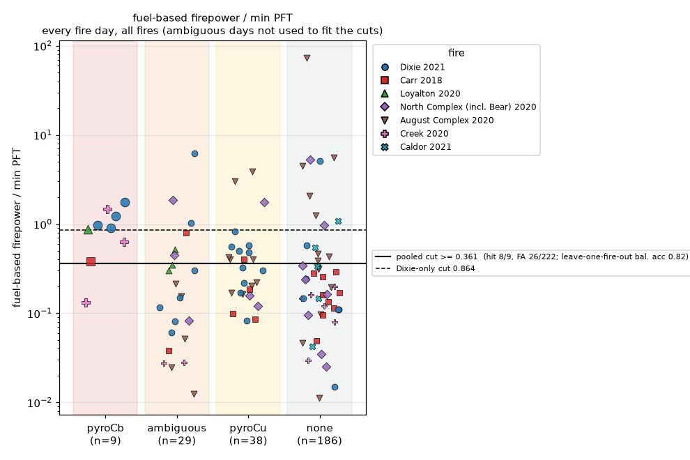
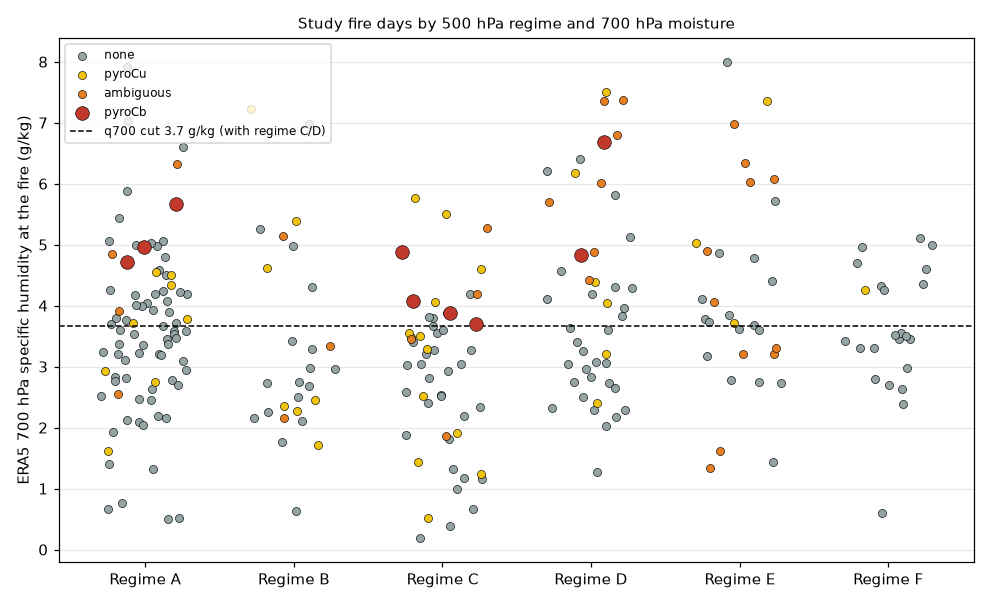

Which days seven large California fires made pyrocumulonimbus (pyroCb) or pyrocumulus (pyroCu), and which of this page's 500 hPa regimes and documented patterns they fell in. Research, not a forecast product.
| Regime | pyroCb | pyroCu | cold tops, ordinary storms too | no deep plume cloud | pyroCb × | Pattern |
|---|---|---|---|---|---|---|
| A | 3 | 8 | 4 | 69 | ×1.0 | This pattern has a ridge (heights +65 m above normal) centered near the northeast Pacific and a trough (-58 m) centered near the Gulf of Alaska, with near-normal heights over California. |
| B | 0 | 7 | 3 | 17 | – | This pattern has a ridge (heights +106 m above normal) centered near the northeast Pacific and a trough (-99 m) centered near the Pacific Northwest, with lower than normal heights over California (cooler, more onshore flow, more chance of showers). |
| C | 4 | 13 | 4 | 31 | ×2.2 | This pattern has a ridge (heights +164 m above normal) centered near British Columbia and a trough (-41 m) centered near the northeast Pacific, with higher than normal heights over California (warm, dry, sinking air). |
| D | 2 | 6 | 7 | 30 | ×1.3 | This pattern has a ridge (heights +105 m above normal) centered near British Columbia and a trough (-124 m) centered near the northeast Pacific, with higher than normal heights over California (warm, dry, sinking air). |
| E | 0 | 3 | 11 | 17 | – | This pattern has a ridge (heights +63 m above normal) centered near the northern Rockies and a trough (-182 m) centered near the northeast Pacific, with near-normal heights over California. |
| F | 0 | 1 | 0 | 22 | – | This pattern has a ridge (heights +218 m above normal) centered near the northeast Pacific and a trough (-96 m) centered near the northern Rockies, with lower than normal heights over California (cooler, more onshore flow, more chance of showers). |
Counts of the studied fire days. pyroCb × = share of pyroCb days in the regime ÷ share of all studied fire days. With 9 pyroCb days these are indicative only.
The 500 hPa regime and the 700 hPa moisture at the fire (ERA5, the moister of 11 a.m. and 5 p.m.) are both fields the models on this page forecast days ahead. Together they cut the regime's false alarms by about two thirds; they're still weaker than the same-day fire-power test, so read them as "the pattern allows pyroCb", not a forecast of one.
| Rule | pyroCb flagged | pyroCu flagged | no-plume flagged | fire-by-fire caught | fire-by-fire flagged | balanced acc. |
|---|---|---|---|---|---|---|
| regime C or D | 6/9 | 19/38 | 61/186 | 6/9 | 80/224 | 0.65 |
| regime A, C or D | 9/9 | 27/38 | 130/186 | 9/9 | 157/224 | 0.65 |
| 700 hPa moisture ≥ 3.7 g/kg | 9/9 | 20/38 | 64/186 | 6/9 | 73/224 | 0.67 |
| regime C or D AND 700 hPa moisture ≥ 3.7 g/kg | 6/9 | 8/38 | 15/186 | 5/9 | 22/224 | 0.73 |
| regime A, C or D AND 700 hPa moisture ≥ 3.7 g/kg | 9/9 | 13/38 | 43/186 | 6/9 | 49/224 | 0.72 |
Left columns: one cut fitted on all seven fires. Right columns: cut fitted on six fires and scored on the seventh, summed. Days with ordinary storms over the fire are left out.
| Pattern (same rules as Documented patterns) | pyroCb | pyroCu | cold tops, ordinary storms too | no deep plume cloud | all days |
|---|---|---|---|---|---|
| Northern California dry thunderstorms (≥ 500 strikes) | 1 | 1 | 5 | 1 | 8 |
| Northeast foehn (offshore gradient) | 1 | 3 | 2 | 21 | 27 |
| Southwest foehn (dry slot at Reno) | 0 | 3 | 0 | 9 | 12 |
| Ridge breakdown, stage 2 (last ridge day) | 1 | 2 | 1 | 4 | 8 |
| Ridge breakdown, stage 3 (first trough day) | 0 | 1 | 1 | 6 | 8 |
| Ridge persists | 5 | 16 | 9 | 47 | 77 |

This pattern has a ridge (heights +111 m above normal) centered near British Columbia and a trough (-91 m) centered near the northeast Pacific, with higher than normal heights over California (warm, dry, sinking air).

This pattern has a ridge (heights +57 m above normal) centered near the Pacific Northwest and a trough (-50 m) centered near British Columbia, with higher than normal heights over California (warm, dry, sinking air).

This pattern has a ridge (heights +58 m above normal) centered near the California coast and a trough (-46 m) centered near the northern Rockies, with higher than normal heights over California (warm, dry, sinking air).
| Per fire day | pyroCb when | pyroCb days caught | other days flagged | balanced acc. |
|---|---|---|---|---|
| radar fire-rooted plume echo top (km MSL, 2nd-highest scan) | >= 10.8 | 5/6 | 3/141 | 0.91 |
| max hourly FP / PFT | >= 0.244 | 8/9 | 22/224 | 0.90 |
| fuel-based firepower / min PFT | >= 0.361 | 7/9 | 31/222 | 0.82 |
| dtheta_fc at PFT min (K) | <= 7.62 | 7/9 | 46/224 | 0.79 |
| U_ML at PFT min (m/s) | <= 8.27 | 7/9 | 53/224 | 0.77 |
| satellite growth (ac / fire day) | >= 10,609 | 7/9 | 56/224 | 0.76 |
| min PFT, 12-22 PDT (GW) | <= 411 | 7/9 | 60/224 | 0.75 |
| max mixed-layer q (g/kg) | >= 2.39 | 6/9 | 42/224 | 0.74 |
| fuel-based firepower at peak (GW; LANDFIRE x area / GOES timing) | >= 33 | 7/9 | 81/222 | 0.71 |
| z_fc at PFT min (km AGL) | <= 6.43 | 5/9 | 66/224 | 0.63 |
| max hourly firepower (GW) | >= 34.3 | 4/9 | 64/224 | 0.58 |
| fuel ahead: available fine + crown fuel (kg/m2) | >= 1.19 | 7/9 | 158/222 | 0.53 |
| fuel ahead: crown-fire-susceptible fraction | >= 0.0367 | 8/9 | 212/222 | 0.47 |
| fuel ahead: mean slope (deg) | >= 10.7 | 7/9 | 189/222 | 0.46 |
| burned that day: available fuel (kg/m2) | >= 1.02 | 7/9 | 197/224 | 0.45 |
| fuel ahead: canopy fuel load (kg/m2) | >= 1.22 | 5/9 | 158/222 | 0.42 |
Each cut is fitted on six fires and scored on the seventh, then the counts are added up. FP = fire power from GOES fire radiative power; PFT from HRRR. Days with ordinary storms over the fire are left out. The radar row uses only radars without terrain clutter at the fire (Beale, Eureka, Reno; not Hanford or Sacramento for Creek and Caldor), and radar observes the plume rather than forecasting it. "Fuel ahead" rows use pre-fire LANDFIRE fuels within 5 km of the previous day's growth.
| Fire | Fire day | Class | Regime | Patterns | min PFT (GW) | FP/PFT | q_ML (g/kg) | Growth (ac) | Coldest top (°C) |
|---|---|---|---|---|---|---|---|---|---|
| Carr 2018 | 2018-07-26 | pyroCb | C | – | 186 | 0.46 | 2.7 | 23,072 | -45 |
| Loyalton 2020 | 2020-08-15 | pyroCb | A | dry tstorms | 45 | 0.24 | 5.0 | 25,200 | -52 |
| Creek 2020 | 2020-09-05 | pyroCb | C | – | 256 | 0.64 | 2.4 | 112,045 | -60 |
| Creek 2020 | 2020-09-06 | pyroCb | C | – | 25 | 5.17 | 2.5 | 18,970 | -51 |
| Creek 2020 | 2020-09-07 | pyroCb | C | NE foehn | 384 | 0.30 | 2.6 | 43,434 | -43 |
| Dixie 2021 | 2021-07-19 | pyroCb | D | ridge breakdown 2 | 57 | 0.83 | 6.3 | 25,486 | -44 |
| Dixie 2021 | 2021-07-29 | pyroCb | D | – | 33 | 0.67 | 4.3 | 10,672 | -51 |
| Dixie 2021 | 2021-08-09 | pyroCb | A | – | 16 | 2.96 | 2.9 | 14,288 | -42 |
| Dixie 2021 | 2021-08-14 | pyroCb | A | – | 19 | 1.67 | 4.5 | 19,492 | -44 |
| Carr 2018 | 2018-07-24 | pyroCu | C | – | 54 | 0.39 | 6.3 | 4,596 | -40 |
| Carr 2018 | 2018-07-27 | pyroCu | C | – | no solution | 0.00 | 1.1 | 45,591 | -39 |
| Carr 2018 | 2018-07-29 | pyroCu | C | – | 382 | 0.01 | 2.0 | 5,135 | -25 |
| Carr 2018 | 2018-07-31 | pyroCu | C | – | 266 | 0.05 | 2.6 | 7,035 | -26 |
| Carr 2018 | 2018-08-14 | pyroCu | A | – | 195 | 0.06 | 3.1 | 5,108 | -27 |
| Carr 2018 | 2018-08-16 | pyroCu | D | – | no solution | 0.00 | 1.0 | 2,607 | -38 |
| August Complex 2020 | 2020-08-16 | pyroCu | E | dry tstorms | 157 | 0.06 | 6.4 | 5,122 | -32 |
| North Complex (incl. Bear) 2020 | 2020-08-18 | pyroCu | D | ridge breakdown 2 | 122 | 0.03 | 4.7 | 1,129 | -41 |
| August Complex 2020 | 2020-08-18 | pyroCu | D | ridge breakdown 2 | 91 | 0.50 | 7.1 | 70,855 | -42 |
| August Complex 2020 | 2020-08-19 | pyroCu | E | ridge breakdown 3 | 560 | 0.29 | 2.4 | 90,112 | -40 |
| North Complex (incl. Bear) 2020 | 2020-08-22 | pyroCu | B | – | 286 | 0.02 | 2.5 | 2,948 | -24 |
| August Complex 2020 | 2020-08-22 | pyroCu | B | – | 292 | 0.07 | 1.8 | 15,034 | -27 |
| August Complex 2020 | 2020-08-23 | pyroCu | B | – | 108 | 0.11 | 4.7 | 5,337 | -33 |
| North Complex (incl. Bear) 2020 | 2020-08-24 | pyroCu | B | – | 25 | 0.24 | 7.1 | 3,674 | -23 |
| August Complex 2020 | 2020-08-26 | pyroCu | A | – | 124 | 0.05 | 1.9 | 8,347 | -22 |
| August Complex 2020 | 2020-09-06 | pyroCu | C | – | 24 | 1.43 | 4.1 | 14,742 | -24 |
| North Complex (incl. Bear) 2020 | 2020-09-08 | pyroCu | C | NE foehn | no solution | 0.00 | 0.6 | 211,443 | -34 |
| North Complex (incl. Bear) 2020 | 2020-09-09 | pyroCu | C | NE foehn | no solution | 0.00 | 0.7 | 10,799 | -31 |
| August Complex 2020 | 2020-09-09 | pyroCu | C | NE foehn | no solution | 0.00 | 0.6 | 49,537 | -28 |
| Creek 2020 | 2020-09-10 | pyroCu | C | – | no solution | 0.00 | 1.2 | 5,545 | -38 |
| August Complex 2020 | 2020-09-17 | pyroCu | C | – | 521 | 0.07 | 2.9 | 11,320 | -38 |
| Creek 2020 | 2020-10-06 | pyroCu | C | – | no solution | 0.00 | 1.5 | 4,584 | -39 |
| August Complex 2020 | 2020-10-08 | pyroCu | A | – | 121 | 0.04 | 1.7 | 4,287 | -34 |
| Dixie 2021 | 2021-07-18 | pyroCu | D | – | 224 | 0.26 | 3.6 | 27,016 | -39 |
| Dixie 2021 | 2021-07-24 | pyroCu | A | – | 149 | 0.37 | 4.1 | 17,399 | -27 |
| Dixie 2021 | 2021-07-25 | pyroCu | E | – | 35 | 0.31 | 5.1 | 2,352 | -29 |
| Dixie 2021 | 2021-07-28 | pyroCu | D | – | 66 | 0.07 | 3.1 | 8,745 | -27 |
| Dixie 2021 | 2021-08-04 | pyroCu | A | – | no solution | 0.00 | 0.7 | 75,819 | -27 |
| Dixie 2021 | 2021-08-10 | pyroCu | A | – | 13 | 1.63 | 2.0 | 9,079 | -24 |
| Dixie 2021 | 2021-08-11 | pyroCu | C | – | 41 | 0.49 | 2.5 | 5,582 | -34 |
| Dixie 2021 | 2021-08-13 | pyroCu | C | – | 12 | 2.39 | 4.8 | 2,889 | -39 |
| Dixie 2021 | 2021-08-15 | pyroCu | A | – | 26 | 0.95 | 3.1 | 8,392 | -37 |
| Dixie 2021 | 2021-08-16 | pyroCu | A | – | 353 | 0.59 | 2.7 | 48,830 | -36 |
| Dixie 2021 | 2021-08-17 | pyroCu | F | SW foehn | 761 | 0.05 | 1.5 | 44,595 | -31 |
| Dixie 2021 | 2021-08-30 | pyroCu | B | – | no solution | 0.00 | 0.5 | 31,877 | -27 |
| Dixie 2021 | 2021-08-31 | pyroCu | B | SW foehn | no solution | 0.00 | 0.4 | 25,541 | -23 |
| Caldor 2021 | 2021-08-31 | pyroCu | B | SW foehn | no solution | 0.00 | 0.4 | 8,021 | -22 |
| Dixie 2021 | 2021-09-06 | pyroCu | D | – | no solution | 0.00 | 0.3 | 3,190 | -22 |






